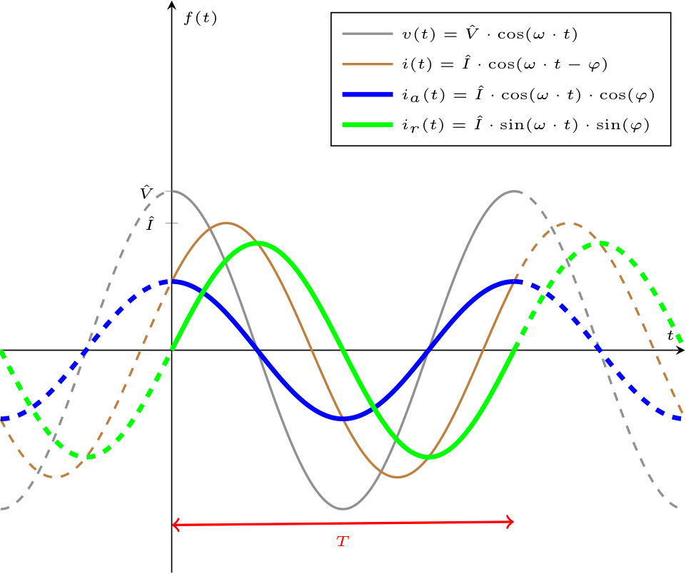
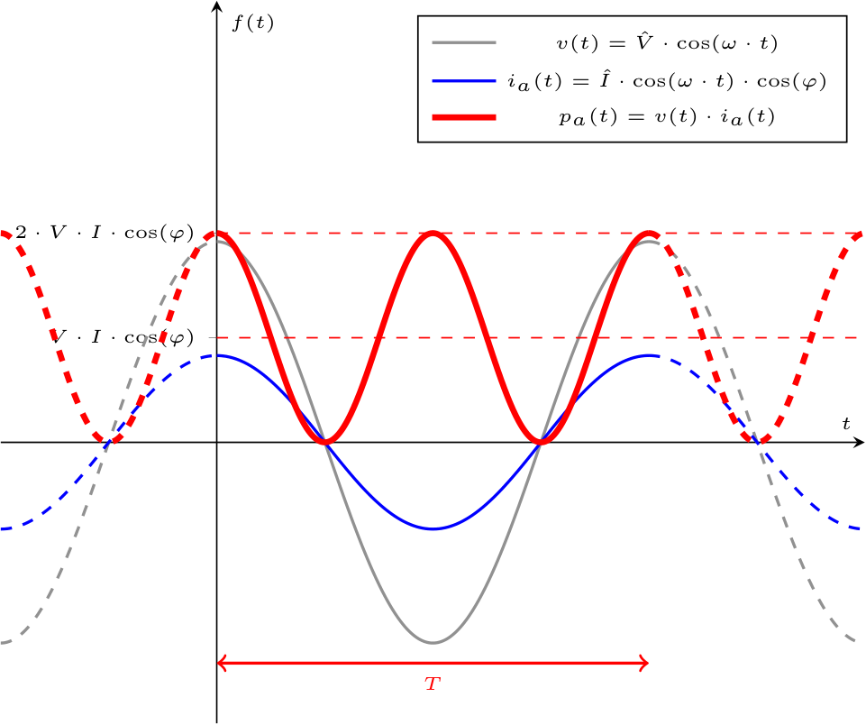
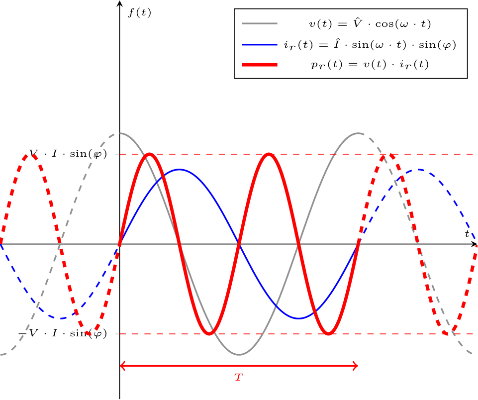
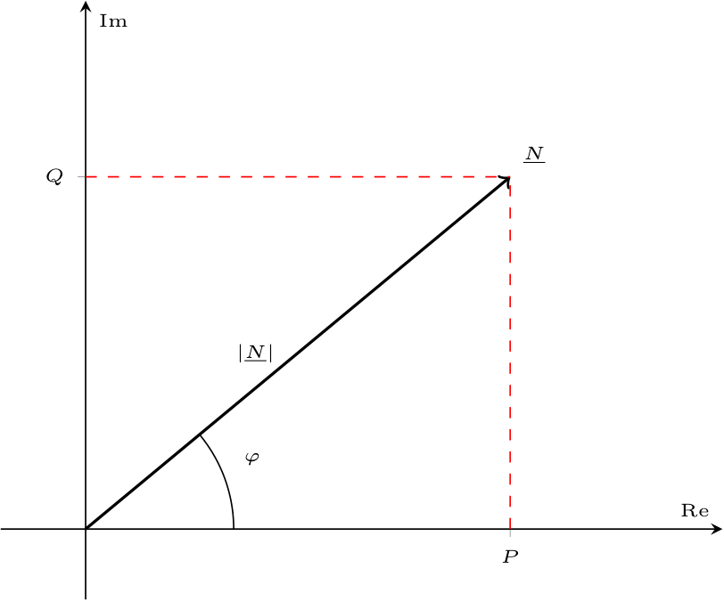
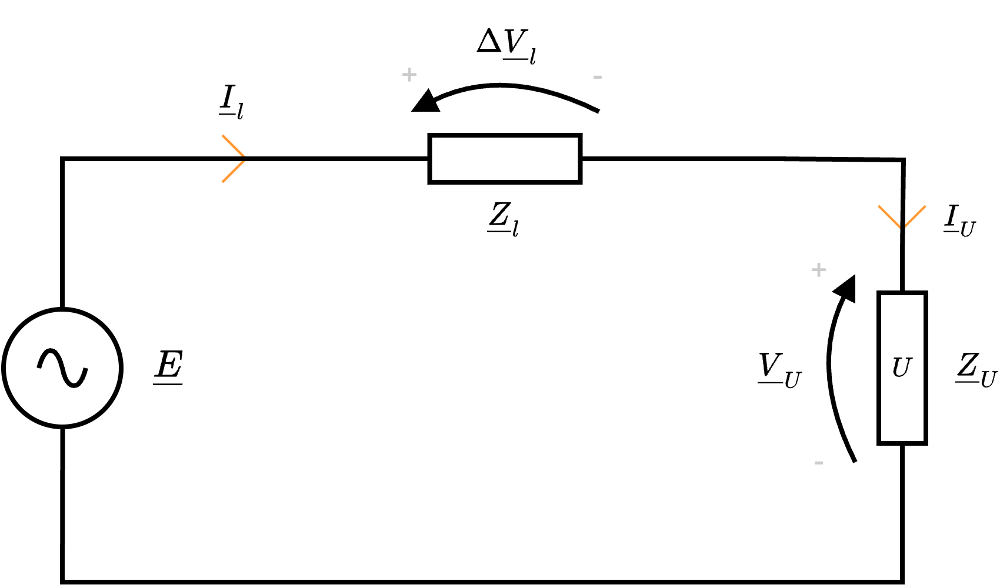
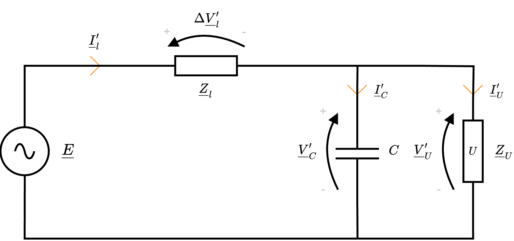
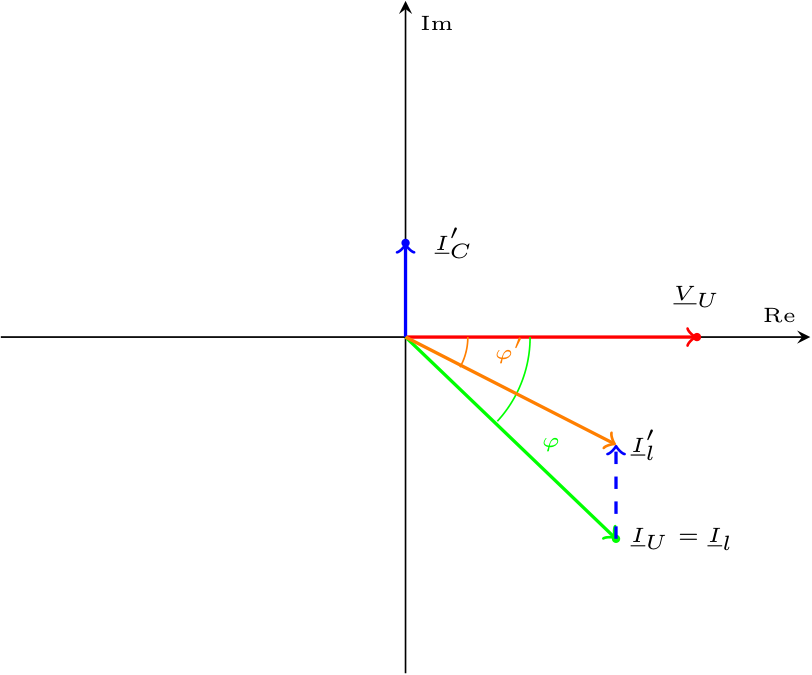
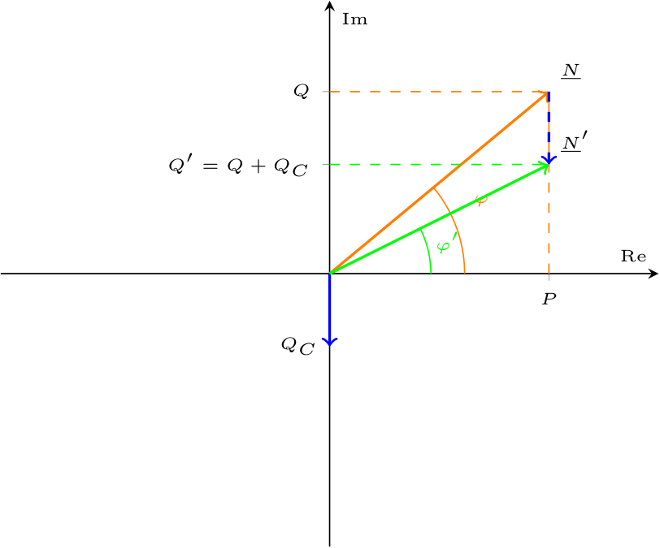
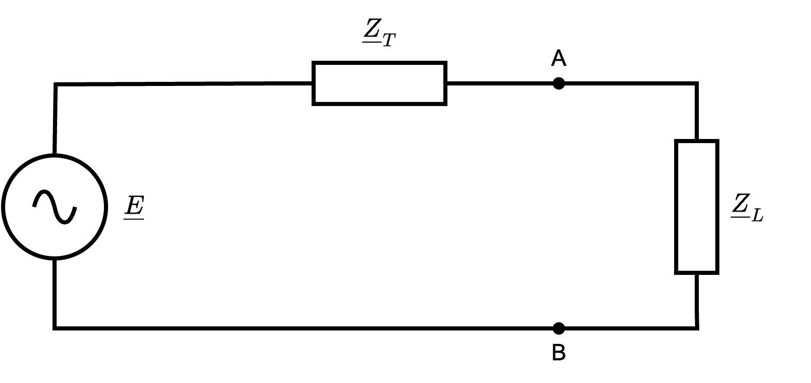

Definizione - Potenza in regime sinusoidale
Considerando una rete in regime sinusoidale composta da un componente U, in cui: dove è possibile verificare, che \( i_a(t)\) è in fase con \( v(t)\), \( i_r(t)\) è in quadratura con \( v(t)\) e la somma delle due componenti è uguale a \( i(t)\).
Date tali ipotesi, è possibile calcolare la potenza assorbita dal componente come \[ \begin{array}{ccl} p(t) & = & v(t) \cdot i(t) \\ & = & v(t) \cdot (i_a(t) + i_r(t)) \\ & = & \underbrace{v(t) \cdot i_a(t)}_{p_a(t)} + \underbrace{v(t) \cdot i_r(t)}_{p_r(t)} \end{array} \] ed identificarla come la somma di due componenti: la potenza attiva istantanea \( p_a(t)\) e la potenza reattiva istantanea \( p_r(t)\). Come è evidente dal grafico, la potenza attiva istantanea è sempre positiva (si ha un flusso di energia unidirezionale, da generatore a carico) data la presenza della funzione coseno elevata al quadrato (\( cos(\varphi)\) è infatti una costante). Per questo motivo, essa è "associata" ad un resistore (che assorbe sempre potenza).
Ha inoltre come valore medio \( V \cdot I \cdot \cos(\varphi)\). Come è evidente dal grafico, la potenza reattiva istantanea è sia positiva che negativa (si ha un flusso di energia bidirezionale). Per questo motivo, essa è "associata" a induttori e condensatori.
Data la presenza della funzione seno (non elevata al quadrato), si ha che sul suo periodo ha valore medio nullo.
- si ipotizza la fase della tensione \( \alpha_V\) nulla, ovvero \[ \alpha_V = 0 \]
- la tensione ai suoi capi \( v(t)\) uguale a \[ \begin{array}{ccl} v(t) & = & \hat{V} \cdot \cos(\omega \cdot t + \alpha_V) \\ & = & \hat{V} \cdot \cos(\omega \cdot t) \end{array} \]
- lo sfasamento \( \varphi\) introdotto dall'impedenza del circuito uguale a \[ \begin{array}{cclcc} \varphi & = & \alpha_V - \alpha_I & & \\ & \overset{\alpha_V = 0}{=} & - \alpha_I & \implies & \alpha_I = -\varphi \end{array} \]
- la corrente \( i(t)\), uguale a \[ \begin{array}{ccl} i(t) & = & \hat{I} \cdot \cos(\omega \cdot t + \alpha_I) \\ & \overset{\alpha_I = -\varphi}{=} & \hat{I} \cdot \cos(\omega \cdot t - \varphi) \end{array} \] Considerando inoltre la formula del coseno della differenza, per cui \[ \cos(\alpha - \beta) = \cos(\alpha) \cdot \cos(\beta) + \sin(\alpha) \cdot \sin(\beta) \] è possibile riscrivere la funzione come \[ \begin{array}{ccl} i(t) & = & \hat{I} \cdot \cos(\omega \cdot t - \varphi) \\ & = & \hat{I} \cdot \cos(\omega \cdot t) \cdot \cos(\varphi) + \hat{I} \cdot \sin(\omega \cdot t) \cdot \sin(\varphi) \\ & = & i_a(t) + i_r(t) \end{array} \] dove si indica
- \( i_a(t)\) come la componente della corrente in fase alla tensione;
- \( i_r(t)\) come la componente della corrente in quadratura (differenziata di \( \pm \; {}^{\pi} /_{2\;}\)) alla tensione

Date tali ipotesi, è possibile calcolare la potenza assorbita dal componente come \[ \begin{array}{ccl} p(t) & = & v(t) \cdot i(t) \\ & = & v(t) \cdot (i_a(t) + i_r(t)) \\ & = & \underbrace{v(t) \cdot i_a(t)}_{p_a(t)} + \underbrace{v(t) \cdot i_r(t)}_{p_r(t)} \end{array} \] ed identificarla come la somma di due componenti: la potenza attiva istantanea \( p_a(t)\) e la potenza reattiva istantanea \( p_r(t)\).
Potenza attiva istantanea
Si è definita quindi la potenza attiva istantanea uguale a \[ \begin{array}{ccl} p_a(t) & = & v(t) \cdot i_a(t) \\ & = & \overbrace{\hat{V} \cdot \cos(\omega \cdot t)}^{v(t)} \cdot \overbrace{\hat{I} \cdot \cos(\omega \cdot t) \cdot \cos(\varphi)}^{i_a(t)} \\ & = & \hat{V} \cdot \hat{I} \cdot \cos^2(\omega \cdot t) \cdot \cos(\varphi) \end{array} \] e ricordando che il valore di picco è uguale al valore efficace moltiplicato per \( \sqrt{2}\), si ha che \[ \begin{array}{ccl} p_a(t) & = & \hat{V} \cdot \hat{I} \cdot \cos^2(\omega \cdot t) \cdot \cos(\varphi) \\ & \overset{\hat{ X } = \sqrt{2} \cdot X}{=} & \sqrt{2} \cdot V \cdot \sqrt{2} \cdot I \cdot \cos^2(\omega \cdot t) \cdot \cos(\varphi) \\ & = & 2 \cdot V \cdot I \cdot \cos^2(\omega \cdot t) \cdot \cos(\varphi) \end{array} \] e graficandola si ottiene
Ha inoltre come valore medio \( V \cdot I \cdot \cos(\varphi)\).
Potenza reattiva istantanea
Per quanto riguarda la potenza reattiva istantanea, si ha che è possibile calcolare \[ \begin{array}{ccl} p_r(t) & = & v(t) \cdot i_r(t) \\ & = & \overbrace{\hat{V} \cdot \cos(\omega \cdot t)}^{v(t)} \cdot \overbrace{\hat{I} \cdot \sin(\omega \cdot t) \cdot \sin(\varphi)}^{i_r(t)} \end{array} \] e considerando la formula di duplicazione del seno, per cui \[ \sin(2 \cdot \alpha) = 2 \cdot \sin(\alpha) \cdot \cos(\alpha) \quad \implies \quad \sin(\alpha) \cdot \cos(\alpha) = \frac{\sin(2 \cdot \alpha)}{2} \] si ottiene \[ \begin{array}{ccl} p_r(t) & = & \hat{V} \cdot \cos(\omega \cdot t) \cdot \hat{I} \cdot \sin(\omega \cdot t) \cdot \sin(\varphi) \\ & = & \hat{V} \cdot \hat{I} \cdot \cos(\omega \cdot t) \cdot \sin(\omega \cdot t) \cdot \sin(\varphi) \\ & \overset{\sin(\alpha) \cdot \cos(\alpha) = \frac{\sin(2 \cdot \alpha)}{2}}{=} & \hat{V} \cdot \hat{I} \cdot \frac{\sin(2 \cdot \omega \cdot t)}{2} \cdot \sin(\varphi) \\ & \overset{\hat{ X } = \sqrt{2} \cdot X}{=} & \sqrt{2} \cdot V \cdot \sqrt{2} \cdot I \cdot \frac{\sin(2 \cdot \omega \cdot t)}{2} \cdot \sin(\varphi) \\ & = & 2 \cdot V \cdot I \cdot \frac{\sin(2 \cdot \omega \cdot t)}{2} \cdot \sin(\varphi) \\ & = & V \cdot I \cdot \sin(2 \cdot \omega \cdot t) \cdot \sin(\varphi) \end{array} \] e graficandola si ottiene
Data la presenza della funzione seno (non elevata al quadrato), si ha che sul suo periodo ha valore medio nullo.
Definizione - Energia assorbita e potenza attiva in regime sinusoidale
Considerando una rete in regime sinusoidale composta da un componente U descritto da una potenza \( p(t)\) si ha che è possibile calcolare l'energia assorbita \( W\) su un periodo \( T\) come \[ \begin{array}{ccl} W & = & \int_0^T p(t) \ dt \\ & = & \int_0^T p_a(t) + p_r(t) \ dt \\ & = & \int_0^T p_a(t) \ dt + \int_0^T p_r(t) \ dt \end{array} \] È ora possibile considerare che \( p_r\) è una funzione a valore medio nullo sul suo periodo, ottenendo che la potenza reattiva non influisce sull'energia assorbita \[ \begin{array}{ccl} W & = & \int_0^T p_a(t) \ dt + \overbrace{\int_0^T p_r(t) \ dt}^0 \\ & = & \int_0^T 2 \cdot V \cdot I \cdot \cos^2(\omega \cdot t) \cdot \cos(\varphi) \ dt \\ & = & 2 \cdot V \cdot I \cdot \cos(\varphi) \cdot \int_0^T \cos^2(\omega \cdot t) \ dt \end{array} \] È ora possibile considerare una delle formule di duplicazione del coseno \[ \cos(2 \cdot \alpha) = 2 \cdot \cos^2(\alpha) - 1 \quad \implies \quad \cos^2(\alpha) = \frac{1 + \cos(2 \cdot \alpha)}{2} \] ottenendo \[ \begin{array}{ccl} W & = & 2 \cdot V \cdot I \cdot \cos(\varphi) \cdot \int_0^T \cos^2(\omega \cdot t) \ dt \\ & = & 2 \cdot V \cdot I \cdot \cos(\varphi) \cdot \int_0^T \frac{1 + \cos(2 \cdot \alpha)}{2} \ dt \\ & = & 2 \cdot V \cdot I \cdot \cos(\varphi) \cdot \int_0^T \frac{1}{2} + \frac{\cos(2 \cdot \alpha)}{2} \ dt \\ & = & 2 \cdot V \cdot I \cdot \cos(\varphi) \cdot \left[ \int_0^T \frac{1}{2} \ dt + \int_0^T \frac{\cos(2 \cdot \alpha)}{2} \ dt \right] \end{array} \] e, ricordando che anche il coseno ha valore medio nullo è possibile ottenere \[ \begin{array}{ccl} W & = & 2 \cdot V \cdot I \cdot \cos(\varphi) \cdot \left[ \int_0^T \frac{1}{2} \ dt + \overbrace{\int_0^T \frac{\cos(2 \cdot \alpha)}{2} \ dt}^0 \right] \\ & = & 2 \cdot V \cdot I \cdot \cos(\varphi) \cdot \int_0^T \frac{1}{2} \ dt \\ & = & 2 \cdot V \cdot I \cdot \cos(\varphi) \cdot \frac{T}{2} \\ & = & \underbrace{ T \cdot V \cdot I \cdot \cos(\varphi) }_{\text{lavoro utile}} \end{array} \] Tale energia assorbita, è detta anche lavoro utile.
Considerando ora la potenza media attiva \( P\) (su un periodo \( T\)), è calcolabile come \[ \begin{array}{ccl} P & = & \frac{1}{T} \cdot \int_0^T p(t) \ dt \\ & = & \frac{1}{T} \cdot \int_0^T p_a(t) \ dt \\ & = & \frac{1}{T} \cdot W \\ & = & \frac{1}{T} \cdot T \cdot V \cdot I \cdot \cos(\varphi) \\ & = & V \cdot I \cdot \cos(\varphi) \end{array} \] dove \( \cos(\varphi)\) è detto fattore di potenza.
Considerando ora la potenza media attiva \( P\) (su un periodo \( T\)), è calcolabile come \[ \begin{array}{ccl} P & = & \frac{1}{T} \cdot \int_0^T p(t) \ dt \\ & = & \frac{1}{T} \cdot \int_0^T p_a(t) \ dt \\ & = & \frac{1}{T} \cdot W \\ & = & \frac{1}{T} \cdot T \cdot V \cdot I \cdot \cos(\varphi) \\ & = & V \cdot I \cdot \cos(\varphi) \end{array} \] dove \( \cos(\varphi)\) è detto fattore di potenza.
Definizione - Potenza complessa
Considerando una rete in regime sinusoidale è possibile definire la potenza complessa \( \underline{N}\) (misurata in Volt-Ampere \( \mathrm{ \, VA }\)) come il numero complesso \[ \underline{N} = \underline{V} \cdot \underline{I}^* \] dove \[ \left\{ \begin{array}{ccl} \underline{V} & = & V \cdot \mathrm{e}^{\jmath \cdot \alpha_V} \\ \underline{I} & = & I \cdot \mathrm{e}^{\jmath \cdot \alpha_I} \end{array} \right. \] e con \( ^*\) si indica il numero complesso coniugato.
Espandendo tale espressione, è possibile riscriverla come \[ \begin{array}{ccl} \underline{N} & = & \underline{V} \cdot \underline{I}^* \\ & = & V \cdot \mathrm{e}^{\jmath \cdot \alpha_V} \cdot I \cdot \mathrm{e}^{-\jmath \cdot \alpha_I} \\ & = & V \cdot I \cdot \mathrm{e}^{\jmath \cdot (\alpha_V - \alpha_I)} \\ & = & V \cdot I \cdot \mathrm{e}^{\jmath \cdot \varphi} \\ & \overset{\text{formula di Eulero}}{=} & V \cdot I \cdot \cos(\varphi) + \jmath \cdot V \cdot I \cdot \sin(\varphi) \\ & = & P + \jmath \cdot Q \end{array} \] dove \( P\) è detta potenza attiva (misurata in Watt \( \mathrm{ \, W }\)) e \( Q\) è la potenza reattiva (misurata in Volt-Ampere-Reattivi \( \mathrm{ \, VAR }\)).
Considerando ora la legge di Ohm simbolica per cui \[ \underline{V} = \underline{Z} \cdot \underline{I} \] si ha che è possibile calcolare \[ \begin{array}{ccl} \underline{N} & = & \underline{V} \cdot \underline{I}^* \\ & = & \underline{Z} \cdot \underline{I} \cdot \underline{I}^* \\ & = & \underline{Z} \cdot I \cdot \mathrm{e}^{\jmath \cdot \alpha_I} \cdot I \cdot \mathrm{e}^{-\jmath \cdot \alpha_I} \\ & = & \underline{Z} \cdot I^2 \end{array} \] e, considerando che l'impedenza è uguale a \[ \underline{Z} = R + \jmath \cdot X \] si ha che \[ \begin{array}{ccl} \underline{N} & = & \underline{Z} \cdot I^2 \\ & = & (R + \jmath \cdot X) \cdot I^2 \\ & = & R \cdot I^2 + \jmath \cdot X \cdot I^2 \end{array} \] ovvero si è ottenuta la seguente equivalenza: \[ \left\{ \begin{array}{cclcl} P & = & V \cdot I \cdot \cos(\varphi) & = & R \cdot I^2 \\ Q & = & V \cdot I \cdot \sin(\varphi) & = & X \cdot I^2 \end{array} \right. \] Da questo risultato, è possibile considerare che: e definire la potenza apparente come il modulo della potenza complessa \( \left| \underline{N} \right|\) (misurata in Volt Ampere \( \mathrm{ \, VA }\)).
Espandendo tale espressione, è possibile riscriverla come \[ \begin{array}{ccl} \underline{N} & = & \underline{V} \cdot \underline{I}^* \\ & = & V \cdot \mathrm{e}^{\jmath \cdot \alpha_V} \cdot I \cdot \mathrm{e}^{-\jmath \cdot \alpha_I} \\ & = & V \cdot I \cdot \mathrm{e}^{\jmath \cdot (\alpha_V - \alpha_I)} \\ & = & V \cdot I \cdot \mathrm{e}^{\jmath \cdot \varphi} \\ & \overset{\text{formula di Eulero}}{=} & V \cdot I \cdot \cos(\varphi) + \jmath \cdot V \cdot I \cdot \sin(\varphi) \\ & = & P + \jmath \cdot Q \end{array} \] dove \( P\) è detta potenza attiva (misurata in Watt \( \mathrm{ \, W }\)) e \( Q\) è la potenza reattiva (misurata in Volt-Ampere-Reattivi \( \mathrm{ \, VAR }\)).
Considerando ora la legge di Ohm simbolica per cui \[ \underline{V} = \underline{Z} \cdot \underline{I} \] si ha che è possibile calcolare \[ \begin{array}{ccl} \underline{N} & = & \underline{V} \cdot \underline{I}^* \\ & = & \underline{Z} \cdot \underline{I} \cdot \underline{I}^* \\ & = & \underline{Z} \cdot I \cdot \mathrm{e}^{\jmath \cdot \alpha_I} \cdot I \cdot \mathrm{e}^{-\jmath \cdot \alpha_I} \\ & = & \underline{Z} \cdot I^2 \end{array} \] e, considerando che l'impedenza è uguale a \[ \underline{Z} = R + \jmath \cdot X \] si ha che \[ \begin{array}{ccl} \underline{N} & = & \underline{Z} \cdot I^2 \\ & = & (R + \jmath \cdot X) \cdot I^2 \\ & = & R \cdot I^2 + \jmath \cdot X \cdot I^2 \end{array} \] ovvero si è ottenuta la seguente equivalenza: \[ \left\{ \begin{array}{cclcl} P & = & V \cdot I \cdot \cos(\varphi) & = & R \cdot I^2 \\ Q & = & V \cdot I \cdot \sin(\varphi) & = & X \cdot I^2 \end{array} \right. \] Da questo risultato, è possibile considerare che:
- la potenza attiva \( P\) è sempre positiva (data la presenza di \( I^2\)), ed è quindi "associata" a resistori;
- la potenza reattiva \( Q\) può essere sia positiva che negativa, in particolare si ha che se è "associata" ad un induttore (\( X_L = \jmath \cdot \omega \cdot L\)) risulta positiva, altrimenti, nel caso di un condensatore (\( X_C = -\frac{1}{\omega \cdot C}\)) risulta negativa.

Definizione - Rifasamento in sistemi monofase
Considerando una rete in regime sinusoidale (che rispecchia una tipica situazione reale) caratterizzata da
Dato che tale valore può variare (in valore assoluto) nell'intervallo \( [0, 1]\) e che \[ \cos(0) = 1 \] si ha che l'obiettivo sarà ottenere \( \varphi \to 0\). Ricordando che \( \varphi\) indica lo sfasamento tra corrente e tensione, e che il circuito presenta un carico \( \Omega\)-induttivo (ovvero comporta uno sfasamento "positivo" data la reattanza \( \jmath \cdot \omega \cdot L\)), si ha che una soluzione è introdurre un carico \( \Omega\)-capacitivo (che introduce uno sfasamento negativo data la reattanza \( -\frac{1}{\omega \cdot C}\)).
È quindi facile comprendere che "rifasare" significa diminuire la fase \( \varphi\) dell'impedenza. Dato che \[ \underline{I}_l' = \underline{I}_C' + \underline{I}_U' \] e consideriamo \[ \underline{I}_U' \simeq \underline{I}_U \] in quanto consideriamo (ndr, è un'approssimazione) l'impedenza di linea di valore irrilevante rispetto a quella equivalente al condensatore e all'utilizzatore (ovvero la tensione ai capi di U non cambia), si ha quindi la seguente rappresentazione fasoriale (ipotizzando che \( \underline{V}_U\) abbia fase nulla) da cui è possibile evidenziare che la corrente \( \underline{I}_l'\) è uguale alla somma tra la corrente del ramo dell'utilizzatore (che sarebbe uguale alla corrente del circuito senza rifasamento) e la corrente del ramo del condensatore (sfasata di \( \; {}^{\pi} /_{2\;}\) a causa dell'impedenza associata al condensatore).
È possibile inoltre notare (graficamente e matematicamente) che la corrente di linea "rifasata" ha modulo minore, in quanto si ha che \[ \varphi' \lt \varphi \quad \implies \quad \cos(\varphi') \gt \cos(\varphi) \] Dato che è possibile calcolare \[ \begin{array}{ccl} P_U' & = & V_U \cdot I_U' \cdot \cos(\varphi') \\ & = & V_U \cdot (I_l' - I_C') \cdot \cos(\varphi') \\ & = & V_U \cdot I_l' \cdot \cos(\varphi') - V_U \cdot I_C' \cdot \cos(\varphi') \end{array} \] ed ottenere quindi \[ I_l' = \frac{P_U' - V_U \cdot I_C' \cdot \cos(\varphi')}{V_U \cdot \cos(\varphi')} \] si ha che \[ \left| \underline{I}_l' \right| \lt \left| \underline{I}_l \right| \] Si ha che la potenza complessa \( \underline{N}\) associata ad U è uguale a \[ \begin{array}{ccl} \underline{N} & = & P + \jmath \cdot Q \\ & = & V_U \cdot I_U \cdot \cos(\varphi) + \jmath \cdot V_U \cdot I_U \cdot \sin(\varphi) \end{array} \] Dato ciò, è possibile riscrivere la potenza reattiva \( Q\) come \[ \begin{array}{ccl} Q & = & V_U \cdot I_U \cdot \sin(\varphi) \\ & \overset{\cdot \; {}^{P} /_{P\;}}{=} & P \cdot \frac{V_U \cdot I_U \cdot \sin(\varphi)}{P} \\ & \overset{P = V_U \cdot I_U \cdot \cos(\varphi)}{=} & P \cdot \frac{V_U \cdot I_U \cdot \sin(\varphi)}{V_U \cdot I_U \cdot \cos(\varphi)} \\ & = & P \cdot \frac{\sin(\varphi)}{\cos(\varphi)} \\ & = & P \cdot \tan(\varphi) \end{array} \] Considerando ora il circuito rifasato, si ha una potenza reattiva uguale a \[ \begin{array}{ccl} Q' & = & P' \cdot \tan(\varphi') \\ & \overset{P = P'}{=} & P \cdot \tan(\varphi') \\ & = & Q + Q_C \end{array} \] Considerando ora che \[ \begin{array}{ccl} Q_C & = & X_C \cdot (I_C)^2 \\ & \overset{X_C = -\frac{1}{\omega \cdot C}}{=} & -\frac{1}{\omega \cdot C} \cdot (I_C)^2 \end{array} \] e che è possibile scrivere la corrente del ramo del condensatore come \[ \begin{array}{ccl} I_C & = & \frac{V_U}{Z_C} \\ & = & \frac{V_U}{-\frac{1}{\omega \cdot C}} \\ & = & -V_U \cdot \omega \cdot C \end{array} \] si ha quindi che \( Q_C\) è uguale a \[ \begin{array}{ccl} Q_C & = & -\frac{1}{\omega \cdot C} \cdot (I_C)^2 \\ & = & -\frac{1}{\omega \cdot C} \cdot \left( -V_U \cdot \omega \cdot C \right)^2 \\ & = & -\frac{1}{\omega \cdot C} \cdot (V_U)^2 \cdot \omega^2 \cdot C^2 \\ & = & -(V_U)^2 \cdot \omega \cdot C \end{array} \] Dato che \[ Q' = Q + Q_C \quad \implies \quad Q_C = Q' - Q \] è possibile sostituire alla relazione \[ \begin{array}{ccl} Q_C & = & Q' - Q \\ & = & P \cdot \tan(\varphi') - P \cdot \tan(\varphi) \\ & = & P \cdot (\tan(\varphi') - \tan(\varphi)) \end{array} \] Paragonando i risultati, è possibile ottenere l'equazione \[ -(V_U)^2 \cdot \omega \cdot C = P \cdot (\tan(\varphi') - \tan(\varphi)) \] e risolvendo in \( C\) si ottiene \[ C = -\frac{P \cdot (\tan(\varphi') - \tan(\varphi))}{\omega \cdot (V_U)^2} \] dove \( \varphi'\) è il valore dello sfasamento desiderato.

- un generatore di tensione sinusoidale di valore \( \underline{E}\) che impone sulla linea una corrente \( \underline{I}_l\);
- un'impedenza di linea \( \underline{Z}_l\) (\( \Omega\)-induttiva) \[ \underline{Z}_l = R_l + \jmath \cdot X_l \] ai cui capi è presente una tensione \( \Delta \underline{V}_l\);
- un utilizzatore U modellato come un'impedenza \( \underline{Z}_U\) (\( \Omega\)-induttiva) (ndr, la si modella in questo modo perchè tipicamente i carichi sono motori) caratterizzato da una corrente \( \underline{I}_U\) e una tensione ai capi \( \underline{V}_U\)
- per l'effetto Joule si hanno perdite dovute alla dissipazione sulla linea proporzionali a \( (I_l)^2\) in quanto \[ P_{dl} = R_l \cdot ( I_l )^2 \]
- si ha una caduta di tensione sul carico proporzionale a \( I_l\) in quanto (applicando LKT) \[ \begin{array}{ccl} \underline{V}_U & = & \underline{E} - \Delta \underline{V}_l \\ & = & \underline{E} - \underline{Z}_l \cdot \underline{I}_l \end{array} \]
- la potenza \( P_U\), la cui diminuzione sarebbe contraria al funzionamento del carico;
- la tensione \( V_U\), che non può essere aumentata ulteriormente senza compromettere l'isolamento del sistema e quindi provocare malfunzionamenti
Dato che tale valore può variare (in valore assoluto) nell'intervallo \( [0, 1]\) e che \[ \cos(0) = 1 \] si ha che l'obiettivo sarà ottenere \( \varphi \to 0\). Ricordando che \( \varphi\) indica lo sfasamento tra corrente e tensione, e che il circuito presenta un carico \( \Omega\)-induttivo (ovvero comporta uno sfasamento "positivo" data la reattanza \( \jmath \cdot \omega \cdot L\)), si ha che una soluzione è introdurre un carico \( \Omega\)-capacitivo (che introduce uno sfasamento negativo data la reattanza \( -\frac{1}{\omega \cdot C}\)).
È quindi facile comprendere che "rifasare" significa diminuire la fase \( \varphi\) dell'impedenza.
Attuare il rifasamento
Come detto il carico è stato modellato come un'impedenza \( \Omega\)-induttiva, motivo per cui, al fine di ridurre lo sfasamento, occorre introdurre un'impedenza \( \Omega\)-capacitiva che si traduce nell'inserimento di un condensatore in parallelo al carico (in modo da mantenere costante la tensione \( \underline{V}_U\))

È possibile inoltre notare (graficamente e matematicamente) che la corrente di linea "rifasata" ha modulo minore, in quanto si ha che \[ \varphi' \lt \varphi \quad \implies \quad \cos(\varphi') \gt \cos(\varphi) \] Dato che è possibile calcolare \[ \begin{array}{ccl} P_U' & = & V_U \cdot I_U' \cdot \cos(\varphi') \\ & = & V_U \cdot (I_l' - I_C') \cdot \cos(\varphi') \\ & = & V_U \cdot I_l' \cdot \cos(\varphi') - V_U \cdot I_C' \cdot \cos(\varphi') \end{array} \] ed ottenere quindi \[ I_l' = \frac{P_U' - V_U \cdot I_C' \cdot \cos(\varphi')}{V_U \cdot \cos(\varphi')} \] si ha che \[ \left| \underline{I}_l' \right| \lt \left| \underline{I}_l \right| \]
Valore della capacità necessaria al rifasamento
Considerando il triangolo delle potenze
Nota bene - Nella realtà
Nella realtà, si ha che in base al valore del fattore di potenza, è necessario comportarsi in maniera differente:
- se \( \cos(\varphi) \geq 0.95\) non è necessario rifasare la rete (ndr, da notare che tipicamente si preferisce non considerare un fattore di potenza pari a \( 1\) data la variabilità del carico per cui si potrebbe ottenere l'impedenza \( \Omega\)-capacitiva preponderante creando delle sovratensioni);
- se \( \cos(\varphi) \in [0.7, 0.95)\) si ha che si pagheranno delle penali sull'utilizzo della corrente dovute a ciò;
- se \( \cos(\varphi) \lt 0.7\) è obbligatorio rifasare l'impianto.
Dimostrazione - Teorema del massimo trasferimento di potenza in regime sinusoidale
Dato il teorema
Enunciato:
Considerando un generatore reale sinusoidale (o un bipolo equivalente di Thevenin) a cui è collegato un carico in cui si ha \[ \underline{Z}_T = R_T + \jmath \cdot X_T \] e \[ \underline{Z}_L = R_L + \jmath \cdot X_L \] si ha che, affinchè la potenza assorbita da \( \underline{Z}_L\) sia massima, allora si deve avere che \[ \underline{Z}_L = \underline{Z}_T^* \] ovvero \[ \left\{ \begin{array}{ccl} R_L & = & R_T \\ X_L & = & -X_T \end{array} \right. \]

Dimostrazione:
Per dimostrare questo teorema, consideriamo che al fine di calcolare la potenza assorbita da \( \underline{Z}_L\) è necessario calcolare \[ \begin{array}{ccl} P_L & = & R_L \cdot I^2 \\ & = & R_L \cdot \left( \left| \underline{I} \right| \right)^2 \\ & = & R_L \cdot \left( \left| \frac{\underline{E}}{\underline{Z}_T + \underline{Z}_L} \right| \right)^2 \\ & = & R_L \cdot \left( \frac{\left| \underline{E} \right|}{\left| \underline{Z}_T + \underline{Z}_L \right|} \right)^2 \\ & = & R_L \cdot \left( \frac{E}{\sqrt{(R_T + R_L)^2 + (X_T + X_L)^2}} \right)^2 \\ & = & R_L \cdot \frac{E^2}{(R_T + R_L)^2 + (X_T + X_L)^2} \end{array} \] È ora possibile considerare che è una funzione di due variabili (\( R_L\) e \( X_L\)) e per calcolare il massimo è necessario:
- calcolare la derivata parziale rispetto a \( X_L\), ovvero \[ \begin{array}{ccl} \frac{\partial}{\partial X_L} P_L & = & \frac{\partial}{\partial X_L} \left[ R_L \cdot \frac{E^2}{(R_T + R_L)^2 + (X_T + X_L)^2} \right] \\ & \overset{x = X_L}{=} & \frac{\partial}{\partial x} \left[ R_L \cdot \frac{E^2}{(R_T + R_L)^2 + (X_T + x)^2} \right] \\ & = & E^2 \cdot R_L \cdot \frac{\partial}{\partial x} \left[ \frac{1}{(R_T + R_L)^2 + (X_T + x)^2} \right] \\ & = & E^2 \cdot R_L \cdot \frac{\partial}{\partial x} \left[ \left((R_T + R_L)^2 + (X_T + x)^2\right)^{-1} \right] \\ & = & E^2 \cdot R_L \cdot \left[ -2 \cdot (X_T + x) \cdot \left((R_T + R_L)^2 + (X_T + x)^2\right)^{-2} \right] \\ & = & E^2 \cdot R_L \cdot \frac{-2 \cdot (X_T + x)}{\left((R_T + R_L)^2 + (X_T + x)^2\right)^{2}} \end{array} \] È ora possibile porre uguale a \( 0\) al fine di trovare la soluzione dell'equazione \begin{aligned} & E^2 \cdot R_L \cdot \frac{-2 \cdot (X_T + x)}{\left((R_T + R_L)^2 + (X_T + x)^2\right)^{2}} = 0 & \iff \\ & E^2 \cdot R_L \cdot (-2) \cdot (X_T + x) = 0 & \iff \\ & X_T + x = 0 & \iff \\ & X_T + x = 0 & \overset{X_L = x}{\iff} \\ & X_T + X_L = 0 & \iff \\ & X_L = -X_T & \end{aligned}
- calcolare la derivata parziale rispetto a \( R_L\), ovvero \[ \begin{array}{ccl} \frac{\partial}{\partial R_L} P_L & = & \frac{\partial}{\partial R_L} \left[ R_L \cdot \frac{E^2}{(R_T + R_L)^2 + (X_T + X_L)^2} \right] \\ & \overset{x = R_L}{=} & \frac{\partial}{\partial x} \left[ x \cdot \frac{E^2}{(R_T + x)^2 + (X_T + X_L)^2} \right] \\ & = & E^2 \cdot \frac{\partial}{\partial x} \left[ x \cdot \frac{1}{(R_T + x)^2 + (X_T + X_L)^2} \right] \\ & = & E^2 \cdot \frac{\partial}{\partial x} \left[ x \cdot \left( (R_T + x)^2 + (X_T + X_L)^2 \right)^{-1} \right] \\ & = & E^2 \cdot \left[ \left( (R_T + x)^2 + (X_T + X_L)^2 \right)^{-1} + \frac{x \cdot (-2) \cdot (R_T + x)}{\left( (R_T + x)^2 + (X_T + X_L)^2 \right)^{2}} \right] \\ & \overset{X_L = -X_T}{=} & E^2 \cdot \left[ (R_T + x)^{-2} + \frac{-2 \cdot x \cdot (R_T + x)}{(R_T + x)^4} \right] \\ & = & E^2 \cdot \left[ \frac{(R_T + x)^2}{(R_T + x)^{4}} + \frac{-2 \cdot x \cdot (R_T + x)}{(R_T + x)^4} \right] \\ & = & E^2 \cdot \left[ \frac{(R_T + x)^2 - 2 \cdot x \cdot (R_T + x)}{(R_T + x)^4} \right] \\ & = & \frac{E^2 \cdot (R_T + x)^2 - 2 \cdot E^2 \cdot x \cdot (R_T + x)}{(R_T + x)^4} \end{array} \] È ora possibile porre uguale a \( 0\) al fine di trovare la soluzione dell'equazione \begin{aligned} & \frac{E^2 \cdot (R_T + x)^2 - 2 \cdot E^2 \cdot x \cdot (R_T + x)}{(R_T + x)^4} = 0 & \iff \\ & E^2 \cdot (R_T + x)^2 - 2 \cdot E^2 \cdot x \cdot (R_T + x) = 0 & \iff \\ & E^2 \cdot (R_T + x) \cdot \left[ (R_T +x) - 2 \cdot x \right] = 0 & \iff \\ & E^2 \cdot (R_T + x) \cdot \left[ R_T - x \right] = 0 & \iff \\ & E^2 \cdot ((R_T)^2 - x^2) = 0 & \iff \\ &(R_T)^2 - x^2 = 0 & \overset{R_L = x}{\iff} \\ &(R_T)^2 - (R_L)^2 = 0 & \iff \\ &(R_L)^2 = (R_T)^2 & \iff \\ & R_L = R_T & \end{aligned}
Definizione - Teorema di Boucherot
In una rete a regime sinusoidale la sommatoria delle potenze complesse generate è uguale alla sommatoria delle potenze complesse assorbite, ovvero \[ \sum_{m = 1}^{\# \ \text{generatori}} \underline{N}_{G, m} = \sum_{k = 1}^{\# \ \text{utilizzatori}} \underline{N}_{A, k} \] Considerando che la potenza complessa è uguale a \[ \left\{ \begin{array}{ccl} \underline{N}_{G} & = & P_G + \jmath \cdot Q_G \\ \underline{N}_{A} & = & P_A + \jmath \cdot Q_A \end{array} \right. \] si ha che \[ \sum_{m = 1}^{\# \ \text{generatori}} P_{G, k} + \jmath \cdot Q_{G, k} = \sum_{k = 1}^{\# \ \text{utilizzatori}} P_{A, k} + \jmath \cdot Q_{A, k} \] ovvero la potenza attiva generata è uguale alla potenza attiva assorbita e la potenza reattiva generata è uguale alla potenza reattiva assorbita.